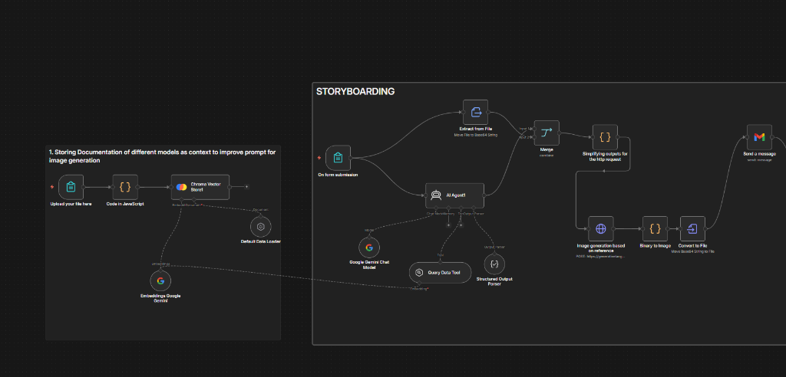
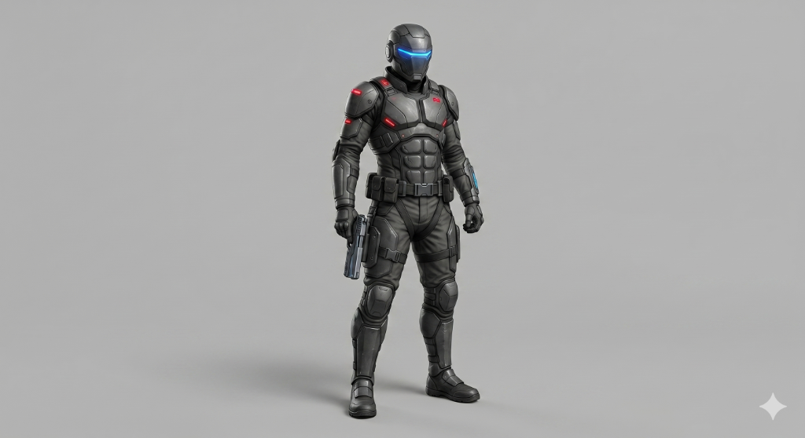
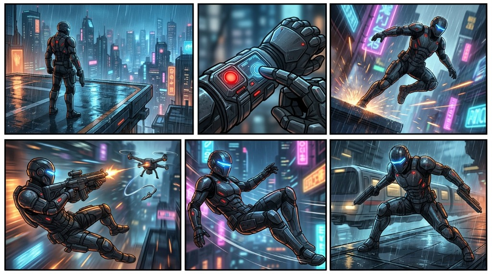

The Problem
Manual storyboarding is a time-consuming bottleneck that slows down the transition from writing to production. Traditional workflows require hours of sketching or manual prompting for every individual scene.
The Process
I built a visual automation flow in n8n. The system reads a script, extracts key scenes, applies a reference image for style consistency, and automatically generates sequential storyboard panels using Gemini and Veo 3.
The Goal
To drastically speed up pre-production, allowing teams to instantly visualize their ideas before rendering. This tool empowers creators to iterate on visual pacing and composition in minutes rather than days.
The Input/Output Engine
This automation represents one core module of a larger, fully automated video generation system I am currently developing. It handles the critical bridge between textual narrative and visual composition.

Scene 1: The character stands at the edge of a high-tech landing pad, looking out at a rainy neon city.
Scene 2: A close-up of the character's hand pressing a holographic button on their wrist gauntlet.
Scene 3: The character jumps off the ledge, falling through the neon signs toward the street below.
Scene 4: A mid-air action shot of the character firing a grappling hook toward a hovering drone.
Scene 5: The character swings gracefully through the air, neon lights reflecting off their visor.
Scene 6: Landing perfectly on a moving hover-train, weapons drawn and ready for action.

